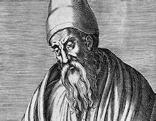
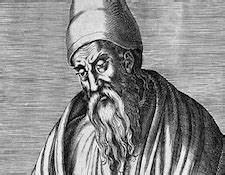

Mathematical Breakthroughs
The Birth of Numbers
The concept of numbers evolved differently across cultures, but each development was revolutionary. The invention of zero by ancient Indian mathematicians changed everything - it wasn't just a placeholder, but a number in its own right. The acceptance of negative numbers and irrational numbers each represented a massive leap in human understanding, expanding what we could represent and calculate.
Geometry and Measurement
The ancient Greeks' systematic study of geometry laid the groundwork for logical proof and abstract mathematical thinking. The discovery that some lengths, like the square root of 2, couldn't be expressed as ratios of whole numbers shook the mathematical world. The development of coordinate geometry by Descartes united algebra and geometry, creating powerful new tools for problem-solving.
Calculus: A Mathematical Revolution
The simultaneous development of calculus by Newton and Leibniz represents one of the greatest breakthroughs in mathematical history. This new mathematics could describe motion, change, and infinity with unprecedented precision. It gave us tools to model the physical world and predict everything from planetary orbits to economic trends.
Modern Applications
Today's mathematics extends far beyond traditional boundaries. Chaos theory helps us understand weather patterns and population dynamics. Abstract algebra secures our digital communications. Machine learning algorithms, built on centuries of statistical theory, are revolutionizing fields from medicine to environmental protection.
Call to Action
Whether you're a student struggling with mathematical concepts, a teacher looking for engaging ways to present material, or simply someone curious about the human story behind the numbers, our website offers accessible, engaging content that connects mathematical concepts to their historical context and modern applications.
 
